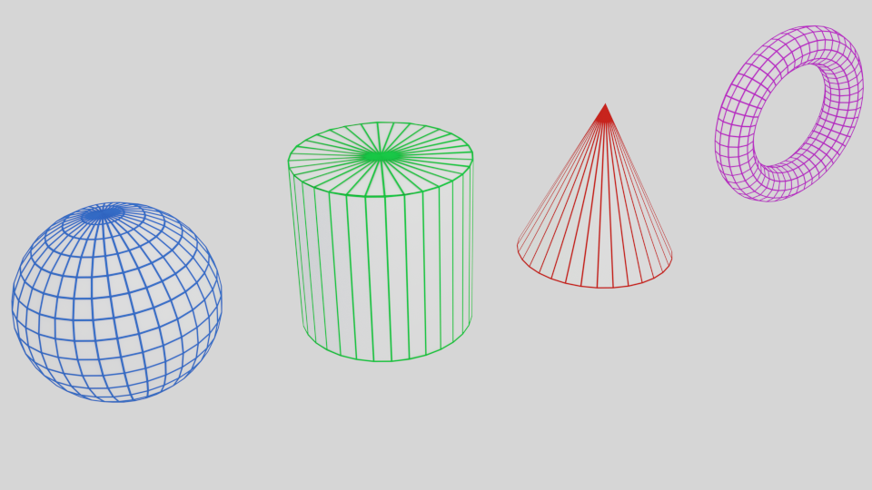
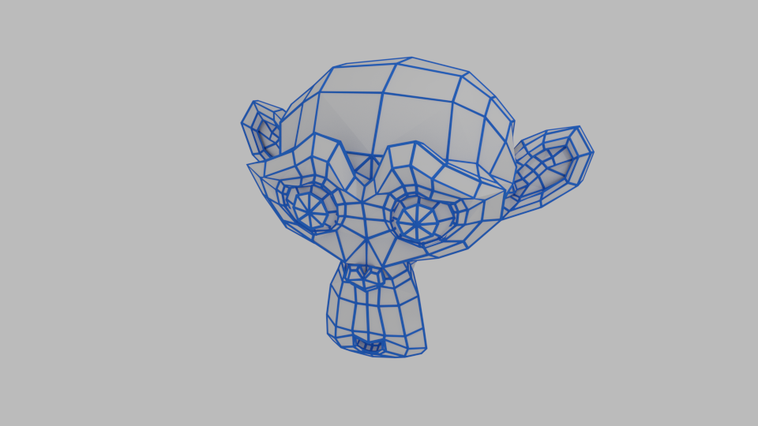
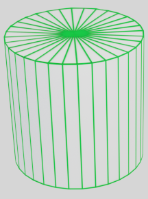

Practical 2 - 3D primitive modeling
Computer Graphics is a science mainly composed of three fields.
- Modeling: How to create and represent 3D shapes efficiently.
- Rendering: How to compute the appearance of a shape.
- Animation: How to add a dynamic behavior to a shape in a virtual space.
This practical introduces two of the most basic modeling techniques.
- Parametric modeling: The surface of an object is described by a set of equations that can be used to build its geometry. This technique is mostly used to describe simple objects that can be then assembled in more complex ones. 
- Descriptive modeling: Step by step, vertices and faces are built to describe the surface of an object. Without any sculpting tools, this is certainly the most tedious way of sculpting. Therefore many methods were proposed to ease this process. 
Additional resources and what to do with them
As always, if you work in Ensimag rooms, first source the script to use a C++11 compiler:
source gcc493.sh
For this practical, you will need additional files
to the archive of the first practical.
These files are available in the practical2.zip archive
here .
The archive contains resources dedicated to this practical, the solution for the cube and indexed cube and a small fix of the shader program. To spend a nice and quiet practical, place the content of the archive as follows:
- Replace the CMakeLists.txt file at the root of your project directory.
- Copy the meshes folder at the root of the project.
- Copy all .hpp files in the include directory.
- Copy all .cpp files in the src directory.
- Copy the Makefile and folder tinyobjloader in the extlib directory.
Then recompile the external libraries (make build_tinyobjloadershould be enough) - Finally, rebuild your project: in your build directory, run
make clean,cmake ..thenmake.
(If you encouter problems: remove the build directory, create a new one, go into it, then runcmake .. && make)
The solution_practical1 directory contains solutions of the first pratical:
- The cube whithout indexing: CubeRenderable.hpp & .cpp
- The cube whith indexing: IndexedCubeRenderable.hpp & .cpp
- An adequate shader flatVertex.glsl that loads colors in a buffer
Warning: do not overwrite your own files with these solutions, rename them!
Sometimes, you can ask for a uniform or an attribute that does not exist a shader program (with ShaderProgram::getUniformLocation() or ShaderProgram::getAttributeLocation()). Since this variable does not exist, the location returned by those functions should not point to any existing variable.
In such case, the value ShaderProgram::null_location is returned ; a value guaranteed to never point to an existing variable in
the shader program.
When a null location is returned, this is not always an error. Indeed, when a uniform or an attribute is not used in the shader sources (the compiler can be pretty smart), it is optimized out. Thus, there is no valid location for this variable. Any failure to set it will not change the rendering. So it is up to you to detect when a null location is returned by a shader program and to decide what to do if this is the case.
Exercice 1: Cylinder
The lateral surface of a unit cylinder can be described by the following parametric equations:
|  |
\(\left\lbrace\begin{array}{lcl} x & = & \cos \theta \\ y & = & \sin \theta \\ z & = & h \end{array}\right.\), for \(\theta \in \left[0,2\pi\right[\) and \(h\in\left[0, 1\right]\). |
In the CylinderRenderable class, you will create a "canonical" cylinder centered along the z axis, with a radius of 1 and bases on h = 0 and h = 1:
- Discretize the lateral surface of the cylinder into quad facets, then triangles. The number of facets could be parametrized in the constructor.
- Complete the geometry with the bottom and top bases (different colors could be used).
-
Color the triangle of your cylinder using the function
randomColor()andgetColor()from the file Utils.hpp. - Add your new renderable in the viewer.
Warning: A skeleton of class CylinderRenderable is provided; comments indicate you where to code.
Exercice 2: Normals
This exercice is about normal computations. It serves two purposes:
- Getting more familiar with normal computing.
- Preparing the next practical about illumination & rendering.
Propose two ways of computing the normals at a point on the lateral surface of the cylinder:
- Using the parametric equations.
- Using the edges of the triangle you built.
Warning: Normals should be normalized.
It must be ensured by construction or using the glm::normalize() function.
Compute :
- Normal per face: Each vertex stores the normal of the face.
- Normal per vertex: Each vertex stores the normal at its position.
Warning: So far, normals are not used by your shaders.
As a test, you could store them in the color buffer m_colors instead of random colors.
If normals are well computed, you should observe nice shades of color around the cylinder body.
Parametric equations for numerous primitives can be found here. We advice you to implement the basic primitives for your project: sphere, torus, cone.
Exercice 3: Mesh
- Use the functions in the file Io.hpp to import an obj mesh in the class
MeshRenderable. - Look at the mesh suzanne.obj to get an idea of how a mesh can be stored into a file.
- Add a
MeshRenderablein the viewer that load Suzanne. - Warning: add random colors in you buffer to see each facets